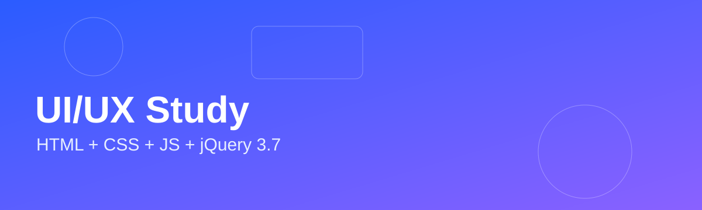

레이아웃 학습
그리드, 정렬, 여백, 시각적 계층을 중심으로 정리합니다.
이미지

프롬프트
"카드 3개가 반응형으로 정렬되는 레이아웃을 만들어줘."
코드
.card-wrap {
display: grid;
grid-template-columns: repeat(auto-fit, minmax(220px, 1fr));
gap: 16px;
}그리드, 정렬, 여백, 시각적 계층을 중심으로 정리합니다.

.card-wrap {
display: grid;
grid-template-columns: repeat(auto-fit, minmax(220px, 1fr));
gap: 16px;
}